Префектура Аомори · Аомори, горы Хаккода · онсэн и сладости
Онсэн Сукаю: кислые источники в горах Хаккода, тодзи по всем правилам и имбирные мандзю
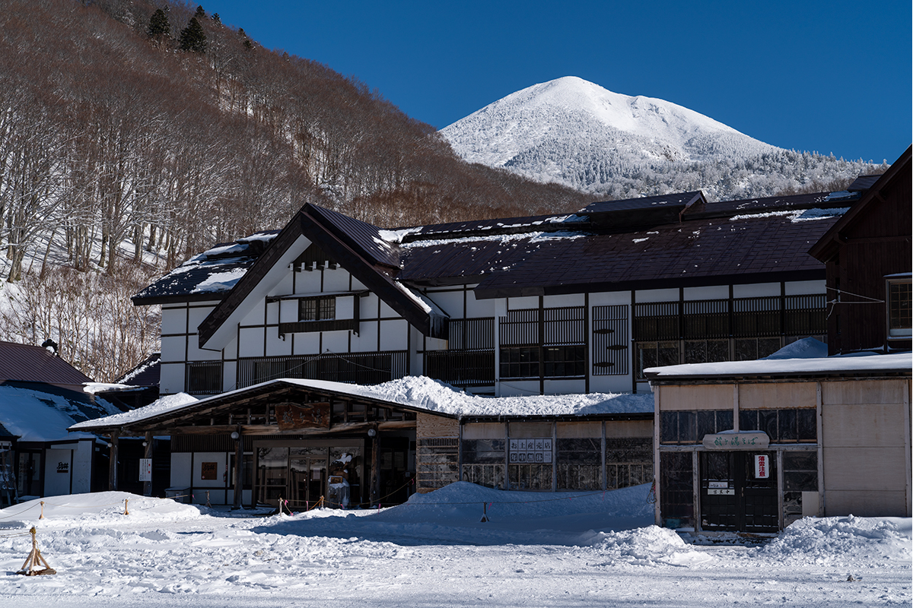
Онсэн Сукаю в горах Хаккода издавна принимает тех, кто едет лечиться горячей водой. Здесь всё устроено для тодзи, неспешного купания на много дней, а домой отсюда увозят имбирно-мисовые мандзю.
Тодзи
Онсэн, ради которого задерживаются
Сукаю находится в префектуре Аомори, у подножия гор Хаккода, на высоте 900 метров. Чистый горный воздух и густая кислая сероводородная вода сделали это место идеальным для лечения: Сукаю первым в стране получил статус «национального оздоровительного онсэна».
Всё началось с целебного источника на склоне гор. К нему издалека шли люди, со временем у воды появилась хижина для купания, а потом и гостиница. Традиция тодзи, долгого лечебного купания, здесь жива до сих пор. Для лечения рёкан советует оставаться на десять дней: три цикла по три дня. Для начала хватит и одного цикла, двух ночей и трёх дней. Уже за этот срок становится понятно, почему в этом доме хочется задержаться надолго: всё, что нужно для тодзи, здесь под рукой.
После обновления комнаты стали разнообразнее. В главном корпусе есть японские номера с татами в старом духе и западные комнаты с кроватями, похожие на загородный дом, в некоторых даже стоит письменный стол. В корпусе для тодзи есть общая кухня, и жить там можно на своём питании или с едой от рёкана. Там тоже появились комнаты с туалетом и умывальником, так что даже одной женщине будет удобно.
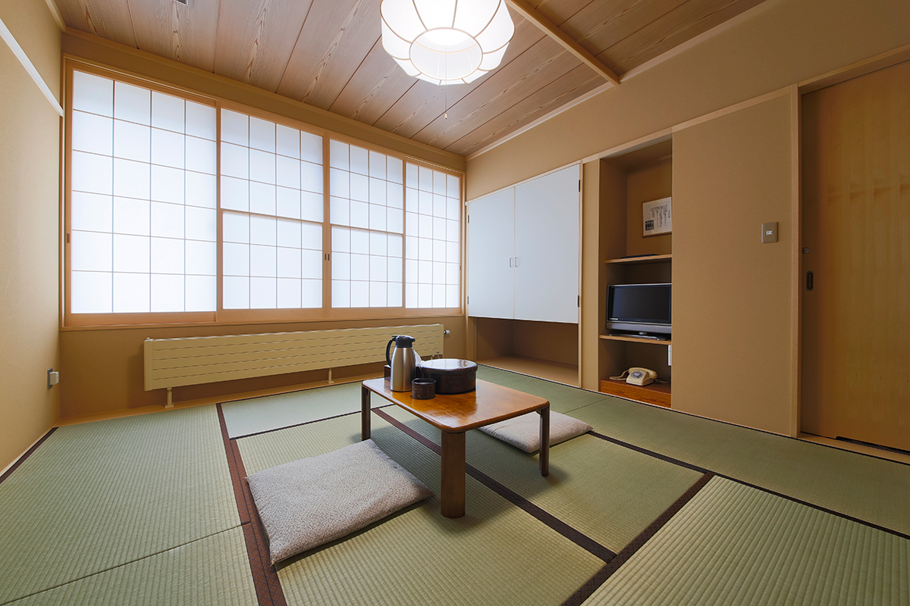
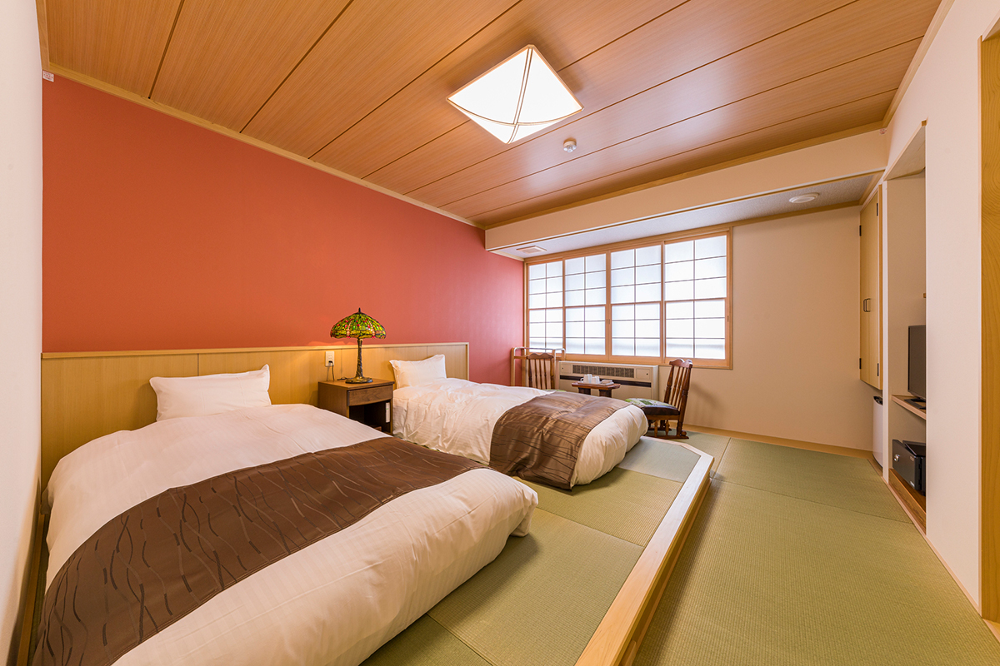
Забота
Медсестра, массаж и лапша соба
В рёкане работает кабинет консультаций по лечебному купанию. Там постоянно дежурит специалист с дипломом медсестры: подскажет, как купаться при вашем самочувствии, и проведёт стресс-тест (200 иен за раз в 2024 году), чтобы сравнить состояние до и после курса. Тем, кто живёт в постоянном напряжении или чувствует себя неважно, начинать стоит именно с этого кабинета.
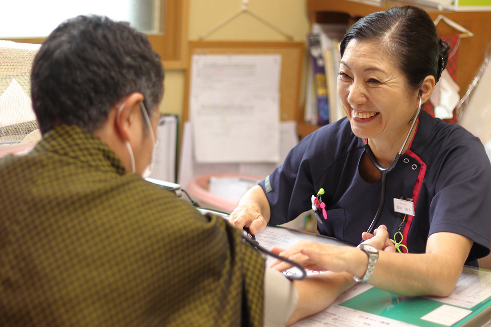
Распарившись в воде, можно зайти на массаж в небольшой кабинет ручного массажа. Если захочется перекусить, в лавке продают «сёга-мисо одэн», простое местное блюдо с имбирно-мисовым соусом, и густое мягкое мороженое. В магазине есть рисовые колобки онигири, хлеб, фирменный кофе в дрип-пакетах, лапша быстрого приготовления, закуски и сладости.
Обедать во время пребывания удобно в лапшичной «Кимэн-ан». Здешнюю «Сукаю собу» хвалят даже гурманы: лапшу делают из одной гречневой муки без связующих, а бульон варят на сушёных сардинах из залива Муцу и добавляют горные травы и грибы.
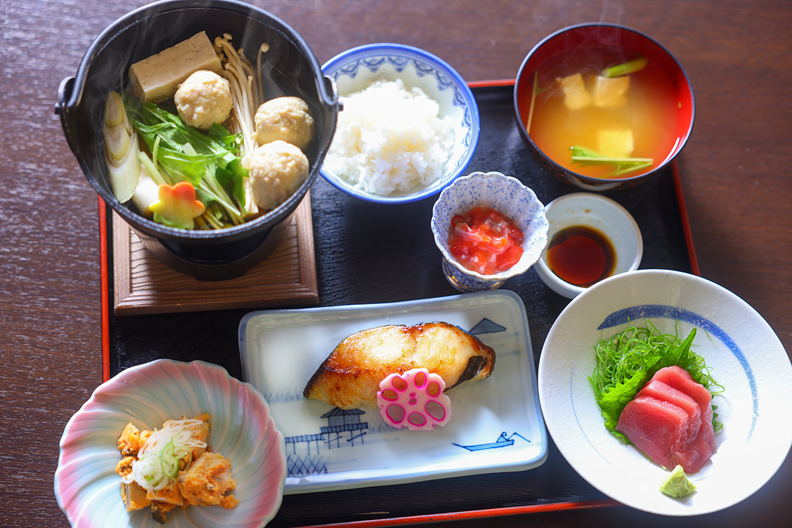
Купальни
Тысяча человек под одной крышей
Главная купальня Сукаю называется «Хиба сэннин-буро», «купальня на тысячу человек из хибы». Это огромный зал площадью 160 татами без единой опоры, целиком построенный из хибы, местного кипарисовика. В нём четыре источника: горячий, прохладный, «четыре к шести» и горячий водопад. Вся вода кислая, сернистая, но на ощупь немного разная. Пар такой кислый, что щиплет глаза, а под водопад встают с головой, прикрывшись плёнкой.
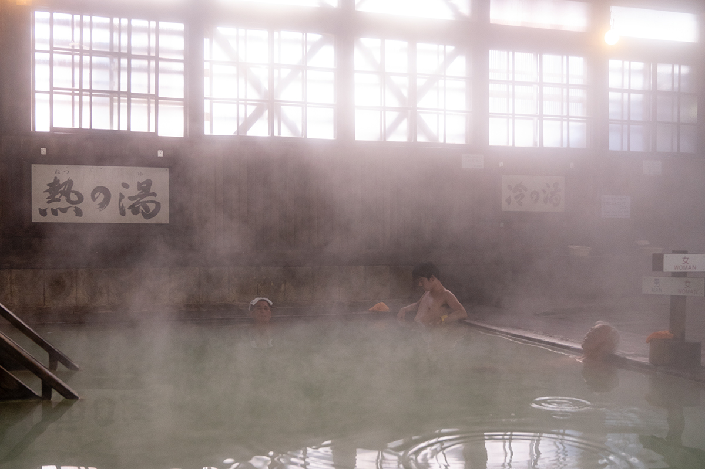
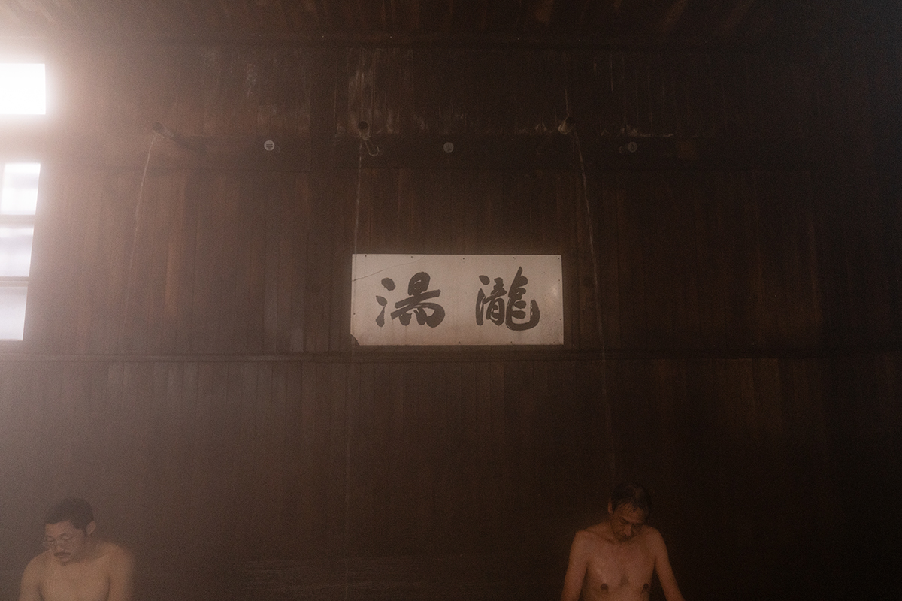
Купание здесь совместное, но в магазине продают специальную одежду для купания, и многие спокойно сидят в воде все вместе. Утром и вечером зал на час отдают только женщинам. Небольшая купальня «Тама-но-ю» питается от другого источника, она разделена на мужскую и женскую и открыта в любое время.
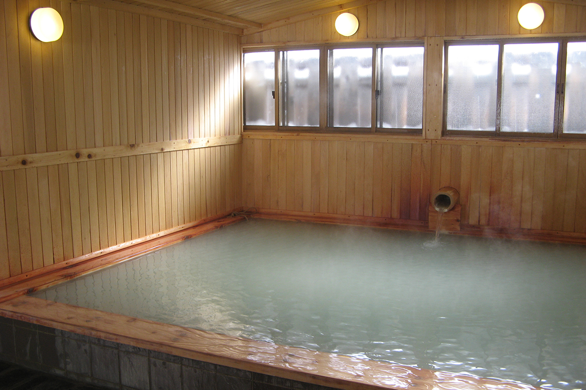
Густая молочная вода разгоняет кровь до кончиков пальцев. После купания пьют чистую воду гор Хаккода, спят днём в комнате и снова идут в купальню. Это и есть настоящий тодзи.
Вода в Сукаю кислая сернистая, с гипсом и сероводородом, из земли она выходит с температурой около 50 °C и течёт в купальни без повторного использования.
Сукаю онсэн рёкан
- Адрес
- префектура Аомори, Аомори, Аракава, Минами-Аракаваяма, государственный лес, Сукаюдзава, 50
- Телефон
- +81 17-738-6400 (9:00–17:00)
- Цены / Вход
- от 13 200 иен за ночь с ужином и завтраком (с налогом и обслуживанием, без налога на купание); дневное купание 1000 иен, 7:00–17:30
- Заезд / выезд
- 15:00 / 11:00
- Сайт
- sukayu.jp
Искусство
Гравюры и каллиграфия Сико Мунакаты
Самый известный художник, родившийся в Аомори, это Сико Мунаката.
В 1960-х и 1970-х годах Мунаката часто выступал на телевидении и стал любимцем всей страны. Из-за близорукости он резал доски, почти касаясь их лицом, и зрители запомнили и эту манеру, и его открытый, простодушный характер. Он нравился заказчикам и оставил много работ на родине.
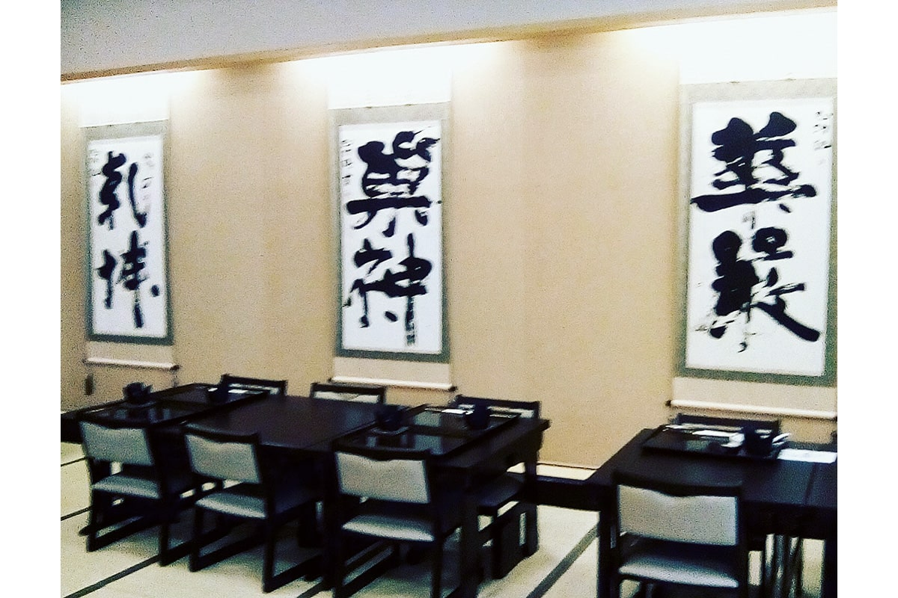
Многие его работы можно увидеть вместе как раз в Сукаю. Мунаката очень любил этот онсэн и, проходя тодзи, резал здесь свои доски. Его каллиграфия и картины висят в залах рёкана и в галерее в глубине здания.
Сладость
Имбирно-мисовые мандзю
Главный сувенир Сукаю это «сёга-мисо мандзю», имбирно-мисовые мандзю. Под тонкой оболочкой прячется начинка из белой фасоли, в которую вмешаны мисо и имбирь: такой вкус издавна любят на севере. Сладко-солёные мандзю хорошо подходят к чаю.
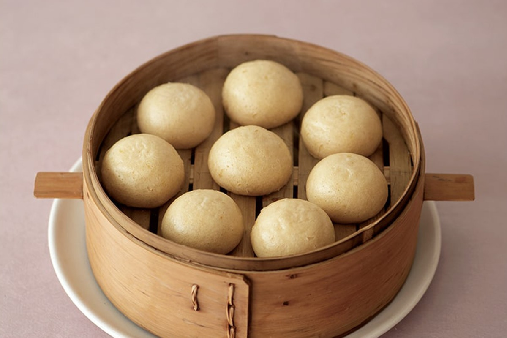
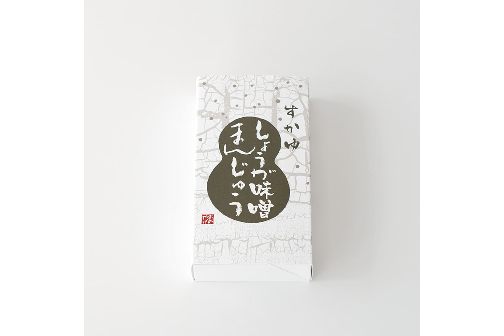
Фото: Вакана Баба.